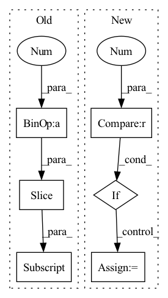

Pattern ID :589
Before Change
if self.context > 1:
z = [x]
for d in range(1, self.context // 2 + 1 ):
z_u = torch.zeros_like(x)
z_u[:, d:, :] = x[:, :-d, :] // i-d
z.append(z_u)
z_d = torch.zeros_like(x)
z_d[:, :-d, :] = x[:, d:, :] // i+dAfter Change
B, N, C = x.shape
x = self.contextize(x, self.context) // (B, N, C*context)
if self.mix_base > 0 and x_base is not None:
x_base = self.contextize(x_base, self.mix_base) // (B, N, 4*mix_base)
x = torch.cat((x_base, x), dim=2)
x = x.view(B*N, -1) // (B*N, C*width)In pattern: SUPERPATTERN
Frequency: 4
Non-data size: 6
Instances Fragment ID: 2026204
Project Name: keio-bioinformatics/mxfold2
Commit Name: 998dd44f054b5851de1d3b751eb20091d5bf5628
Time: 2019-11-11
Author: satoken@bio.keio.ac.jp
File Name: dnnfold/fold/layers.py
M Class Name: FCUnpairedLayer
N Class Name: FCUnpairedLayer
M Method Name: forward(3)
N Method Name: forward(2)
M Parent Class: nn.Module
N Parent Class: nn.Module
M File Name: dnnfold/fold/layers.py
N File Name: dnnfold/fold/layers.py
M Start Line: 212
M End Line: 223
N Start Line: 255
N End Line: 263
Before Change
x_residual = x_residual + x
in_channels = growth_rate[idx]
stacked_channels = sum(growth_rate[idx+1:] )
sections = [in_channels, stacked_channels]
if idx != depth - 1:After Change
x_residual = 0
for idx in range(depth):
if idx == 0 :
x = input
else:
_in_channels = growth_rate[idx - 1]
sections = [_in_channels, sum(growth_rate[idx:])]
x, x_residual = torch.split(x_residual, sections, dim=1)
x = self.net[idx](x) Fragment ID: 2026188
Project Name: tky823/dnn-based_source_separation
Commit Name: 3bac874df403a2b5648fd98049865790c104ed55
Time: 2021-10-16
Author: 40362510+tky823@users.noreply.github.com
File Name: src/models/d2net.py
M Class Name: D2Block
N Class Name: D2Block
M Method Name: forward(2)
N Method Name: forward(2)
M Parent Class: nn.Module
N Parent Class: nn.Module
M File Name: src/models/d2net.py
N File Name: src/models/d2net.py
M Start Line: 174
M End Line: 188
N Start Line: 187
N End Line: 195
Before Change
x_residual = x_residual + x
in_channels = growth_rate[idx]
stacked_channels = sum(growth_rate[idx+1:] )
sections = [in_channels, stacked_channels]
if idx != depth - 1:After Change
x_residual = 0
for idx in range(depth):
if idx == 0 :
x = input
else:
_in_channels = growth_rate[idx - 1]
sections = [_in_channels, sum(growth_rate[idx:])]
x, x_residual = torch.split(x_residual, sections, dim=1)
x = self.net[idx](x) Fragment ID: 2026180
Project Name: tky823/dnn-based_source_separation
Commit Name: 3bac874df403a2b5648fd98049865790c104ed55
Time: 2021-10-16
Author: 40362510+tky823@users.noreply.github.com
File Name: src/models/d2net.py
M Class Name: D2BlockFixedDilation
N Class Name: D2BlockFixedDilation
M Method Name: forward(2)
N Method Name: forward(2)
M Parent Class: nn.Module
N Parent Class: nn.Module
M File Name: src/models/d2net.py
N File Name: src/models/d2net.py
M Start Line: 75
M End Line: 89
N Start Line: 84
N End Line: 92